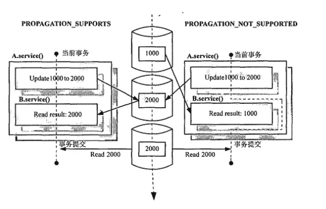
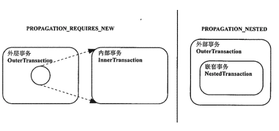

spring在spring-framework:spring-tx中官方支持事务，本文对其做简要介绍。
事务意义
第一:JavaEE 体系进行分层开发,事务处理位于业务层,Spring 提供了分层设计业务层的事务处理解决方案。
第二:spring 框架为我们提供了一组事务控制的接口。具体在后面的第二小节介绍。这组接口是在spring-tx-5.0.2.RELEASE.jar中。
第三:spring 的事务控制都是基于 AOP 的,它既可以使用编程的方式实现,也可以使用配置的方式实现。我们学习的重点是使用配置的方式实现。
API 介绍
PlatformTransactionManager
此接口是 spring 的事务管理器,它里面提供了我们常用的操作事务的方法,包含三个具体的操作：
- 获取事务的状态
TransactionStatus getTransaction（TransactionDefinition definition）
- 提交事务
viod commit（TransactionStatus status）
- 回滚事务
void rollback（TransactionStatus status）
真正管理事务的对象是：
- 使用spring JDBC或 ibatis进行持久化时
org.springframework.jdbc.datasource.DataSourceTransactionManager
- 使用Hibernate进行持久化时
org.springframework.orm.hibernate5.HibernateTransactionManager
TransactionDefinition
//
// Source code recreated from a .class file by IntelliJ IDEA
// (powered by Fernflower decompiler)
//
package org.springframework.transaction;
import org.springframework.lang.Nullable;
public interface TransactionDefinition {
int PROPAGATION_REQUIRED = 0;
int PROPAGATION_SUPPORTS = 1;
int PROPAGATION_MANDATORY = 2;
int PROPAGATION_REQUIRES_NEW = 3;
int PROPAGATION_NOT_SUPPORTED = 4;
int PROPAGATION_NEVER = 5;
int PROPAGATION_NESTED = 6;
int ISOLATION_DEFAULT = -1;
int ISOLATION_READ_UNCOMMITTED = 1;
int ISOLATION_READ_COMMITTED = 2;
int ISOLATION_REPEATABLE_READ = 4;
int ISOLATION_SERIALIZABLE = 8;
int TIMEOUT_DEFAULT = -1;
default int getPropagationBehavior() {
return 0;
}
default int getIsolationLevel() {
return -1;
}
default int getTimeout() {
return -1;
}
default boolean isReadOnly() {
return false;
}
@Nullable
default String getName() {
return null;
}
static TransactionDefinition withDefaults() {
return StaticTransactionDefinition.INSTANCE;
}
}
事务的定义信息对象有如下：
- 获取事务名称
default String getName()
- 获取是否只读
default boolean isReadOnly()
- 获取事务的超时
default int getTimeout()
- 获取事务隔离级别
default int getIsolationLevel()
- 获取事物的传播行为
default int getPropagationBehavior()
事务的隔离级别
事务的隔离级别反映了事务提交并发访问时的处理态度，先明白几个概念：
- 脏读（读取未提交数据）
- 不可重复读（前后多次读取，数据内容不一致）
- 幻读（前后多次读取，数据总量不一致）
在理解spring-tx的隔离级别
ISOLATION_DEFAULT：如果指定隔离级别为ISOLATION_DEFAULT,则表示使用数据库默认的隔离级别，通常情况下是Read Committed。
ISOLATION_READ_UNC0MMITTED：对应Read Uncommitted隔离级别，无法避免脏读，不可重复读和幻读。
ISOLATION_READ_COMMITTED：对应Read Committed隔离级别，可以避免脏读，但无法避免不可重复读和幻读。
ISOLATION_REPEATABLEREADE：对应Repeatable read隔离级别，可以避免脏读和不可重复读，但不能避免幻读。
ISOLATION-SERIALIZABLE：对应Serializable隔离级别，可以避免所有的脏读，不可重复读以及幻读，但并发性效率最低。
事务的传播行为
PROPAGATION_REQUIREDE
如果当前没有事务,就新建一个事务,如果已经存在一个事务中,加入到这个事务中。一般的选择(默认值)。如果当前存在一个事务，则加入当前事务。如果不存在任何事务，则创建一个新的事务。总之，要至少保证在一个事务中运行。PROPAGATION_REQUIRED常作为默认的事务传播行为。
PROPAGATION_SUPPORTS
支持当前事务,如果当前没有事务,就以非事务方式执行(没有事务)如果当前存在一个事务，则加入当前事务。如果当前不存在事务，则直接执行。对于一些查询方法来说，PROPAGATION_SUPPORTS通常是比较合适的传播行为选择。如果当前方法直接执行，那么不需要事务的支持。如果当前方法被其他方法调用，而其他方法启动了一个事务，使用PROPAGATION_SUPPORTS可以保证当前方法能够加入当前事务，并洞察当前事务对数据资源所做的更新。比如，A.service()会首先更新数据库，然后调用B.service()进行查询，那么，如果B.service()是PR0PAGATI0N_SUPP0RTS的传播行为，就可以读取A.serviceO之前所做的最新更新结果(如下图所示)。而如果使用PROPAGATION_NOT_SUPPORTE ,则B. service ()将无法读取最新的更新结果，因为 A. service ()的事务在这时还没有提交(除非隔离级别是Read Uncommitted).

PROPAGATION_MANDATORY
使用当前的事务,如果当前没有事务,就抛出异常。ROPAGATION_MANDATORY强制要求当前存在一个事务，如果不存在，则抛出异常。如果某个方法需要事务支持，但自身又不管理事务提交或者回滚，那么比较适合使用PROPAGATION_MANDATORY.
PROPAGATION_REQUIRES_NEW
新建事务,如果当前在事务中,把当前事务挂起。不管当前是否存在事务，都会创建新的事务。如果当前存在事务，会将当前的事务挂起(Suspend)。如果某个业务对象所做的事情不想影响到外层事务，PROPAGATION_REQUIRES_EW应该是合适的选择。比如，假设当前的业务方法需要向数据库中更新某些日志信息，但即使这些日志信息更新失败，我们也不想因为该业务方法的事务回演, 而影响到外层事务的成功提交。因为这种情况下，当前业务方法的事务成功与否对外层事务来说是无关紧要的。
PROPAGATION_NOT_SUPPORTE
以非事务方式执行操作,如果当前存在事务,就把当前事务挂起。不支持当前事务，而是在没有事务的情况下执行。如果当前存在事务的话，当前事务原则上将被挂起(Suspend),但这要看对应的PlatformTransaction- Manager实现类是否支持事务的挂起。
PROPAGATION-NEVER
以非事务方式运行,如果当前存在事务,抛出异常。永远不需要当前存在事务，如果存在当前事务，则抛出异常。
PROPAGATION_NESTED
如果当前存在事务,则在嵌套事务内执行。如果当前没有事务,则执行 REQUIRED 类似的操作。如果存在当前事务，则在当前事务的一个嵌套事务中执行，否则与PRPAGATION_REQUIRED的行为类似，即创建新的事务，在新创建的事务中执行。PROPAGATION_NESTED粗看起来好像与PROPAGATION_REQUIRES_NEW的行为类似，实际上二者是有差别的。 PROPAGATION_REQUIRES_NEW创建的新事务与外层事务属于同一个“档次”，即二者的地位是相同的。当新创建的事务运行的时候，外层事务将被暂时挂起。而PROPAGATION_NESTED创建的嵌套事务则不然，它是寄生于当前外层事务的，它的地位比当前外层事务的地位要小一号。当内部嵌套事务运行的时候，外层事务也是处于active状态，下图演示了PROPAGATICM_ REQUIRES_NEW和PROPAGATION_NESTED中涉及的多个事务相互之间的地位。也就是说，虽然PROPAGATION_REQUIRES_NEW新创建的事务是左当前外层事务内执行，但新创建的事务是独立于当前外层事务而存在的，二者拥有各自独立的状态而互不干扰。而PROPAGATION_NESTED创建的事务属于当前外层事务的内部子事务(Sub-transaclion),内部子事务的 处理内容属于当前外层事务的一部分，不能独立于外层事务而存在，并且与外层事务共有事务状态。 我想这也就是为什么称其为内部嵌套事务的原因。

超时时间
默认值是-1,没有超时限制。如果有,以秒为单位进行设置。线程已经跑到方法里面，如果已经过去60秒（设置时间）了还没跑完这个方法并且线程在这个方法中的后面还有涉及到对数据库的增删改查操作时会报事务超时错误（会回滚）。如果已经过去60秒了还没跑完但是后面已经没有涉及到对数据库的增删改查操作，那么这时不会报事务超时错误（不会回滚）。
只读事务
建议查询时设置为只读。并不是不能在事务中进行修改等DML操作，它只是一个“暗示”，提示数据库驱动程序和数据库系统，这个事务并不包含更改数据的操作，那么JDBC驱动程序和数据库就有可能根据这种情况对该事务进行一些特定的优化，比方说不安排相应的数据库锁，以减轻事务对数据库的压力，毕竟事务也是要消耗数据库的资源的。
只读事务仅仅是一个性能优化的推荐配置而已，并非强制你非要这样处理不可。
TransactionStatus

事务配置步骤
配置事务管理器
配置事务的通知
配置AOP中的通用切入点表达式
建立事务通知和切入点表达式的对应关系
配置事务的属性
基于 XML 的声明式事务控制(配置方式)
环境搭建
pom
（看spring-tx依赖完整了没有）
<dependency>
<groupId>org.springframework</groupId>
<artifactId>spring-tx</artifactId>
<version>5.2.3.RELEASE</version>
</dependency>
<dependency>
<groupId>c3p0</groupId>
<artifactId>c3p0</artifactId>
<version>0.9.1.2</version>
</dependency>
<dependency>
<groupId>commons-dbutils</groupId>
<artifactId>commons-dbutils</artifactId>
<version>1.4</version>
</dependency>
<dependency>
<groupId>mysql</groupId>
<artifactId>mysql-connector-java</artifactId>
<version>8.0.19</version>
</dependency>
约束
<?xml version="1.0" encoding="UTF-8"?>
<beans xmlns="http://www.springframework.org/schema/beans"
xmlns:xsi="http://www.w3.org/2001/XMLSchema-instance"
xmlns:aop="http://www.springframework.org/schema/aop"
xmlns:tx="http://www.springframework.org/schema/tx"
xsi:schemaLocation="http://www.springframework.org/schema/beans
http://www.springframework.org/schema/beans/spring-beans.xsd
http://www.springframework.org/schema/tx
http://www.springframework.org/schema/tx/spring-tx.xsd
http://www.springframework.org/schema/aop
http://www.springframework.org/schema/aop/spring-aop.xsd">
</beans>
database
#创建数据库:
create database spring_day04;
use spring_day04;
#创建表:
create table account(
id int primary key auto_increment,
name varchar(40),
money float
)character set utf8 collate utf8_general_ci;
POJO
package uestc.zhangkx.domain;
import java.io.Serializable;
/**
* 账户的实体类
*/
public class Account implements Serializable {
private Integer id;
private String name;
private Float money;
public Integer getId() {
return id;
}
public void setId(Integer id) {
this.id = id;
}
public String getName() {
return name;
}
public void setName(String name) {
this.name = name;
}
public Float getMoney() {
return money;
}
public void setMoney(Float money) {
this.money = money;
}
@Override
public String toString() {
return "Account{" +
"id=" + id +
", name='" + name + '\'' +
", money=" + money +
'}';
}
}
dao
package uestc.zhangkx.dao;
import uestc.zhangkx.domain.Account;
/**
* 账户的持久层接口
*/
public interface IAccountDao {
/**
* 根据Id查询账户
* @param accountId
* @return
*/
Account findAccountById(Integer accountId);
/**
* 根据名称查询账户
* @param accountName
* @return
*/
Account findAccountByName(String accountName);
/**
* 更新账户
* @param account
*/
void updateAccount(Account account);
}
package uestc.zhangkx.dao.impl;
import uestc.zhangkx.dao.IAccountDao;
import uestc.zhangkx.domain.Account;
import org.springframework.jdbc.core.BeanPropertyRowMapper;
import org.springframework.jdbc.core.support.JdbcDaoSupport;
import java.util.List;
/**
* 账户的持久层实现类
*/
public class AccountDaoImpl extends JdbcDaoSupport implements IAccountDao {
@Override
public Account findAccountById(Integer accountId) {
List<Account> accounts = super.getJdbcTemplate().query("select * from account where id = ?",new BeanPropertyRowMapper<Account>(Account.class),accountId);
return accounts.isEmpty()?null:accounts.get(0);
}
@Override
public Account findAccountByName(String accountName) {
List<Account> accounts = super.getJdbcTemplate().query("select * from account where name = ?",new BeanPropertyRowMapper<Account>(Account.class),accountName);
if(accounts.isEmpty()){
return null;
}
if(accounts.size()>1){
throw new RuntimeException("结果集不唯一");
}
return accounts.get(0);
}
@Override
public void updateAccount(Account account) {
super.getJdbcTemplate().update("update account set name=?,money=? where id=?",account.getName(),account.getMoney(),account.getId());
}
}
service
package uestc.zhangkx.service;
import uestc.zhangkx.domain.Account;
/**
* 账户的业务层接口
*/
public interface IAccountService {
/**
* 根据id查询账户信息
* @param accountId
* @return
*/
Account findAccountById(Integer accountId);
/**
* 转账
* @param sourceName 转成账户名称
* @param targetName 转入账户名称
* @param money 转账金额
*/
void transfer(String sourceName,String targetName,Float money);
}
package uestc.zhangkx.service.impl;
import uestc.zhangkx.dao.IAccountDao;
import uestc.zhangkx.domain.Account;
import uestc.zhangkx.service.IAccountService;
/**
* 账户的业务层实现类
*
* 事务控制应该都是在业务层
*/
public class AccountServiceImpl implements IAccountService{
private IAccountDao accountDao;
public void setAccountDao(IAccountDao accountDao) {
this.accountDao = accountDao;
}
@Override
public Account findAccountById(Integer accountId) {
return accountDao.findAccountById(accountId);
}
@Override
public void transfer(String sourceName, String targetName, Float money) {
System.out.println("transfer....");
//2.1根据名称查询转出账户
Account source = accountDao.findAccountByName(sourceName);
//2.2根据名称查询转入账户
Account target = accountDao.findAccountByName(targetName);
//2.3转出账户减钱
source.setMoney(source.getMoney()-money);
//2.4转入账户加钱
target.setMoney(target.getMoney()+money);
//2.5更新转出账户
accountDao.updateAccount(source);
//2.6更新转入账户
accountDao.updateAccount(target);
}
}
bean中配置事务
根据之前事务配置的步骤一步步来：
- 配置事务管理器
- 配置事务的通知
- 配置AOP中的通用切入点表达式
- 建立事务通知和切入点表达式的对应关系
- 配置事务的属性
1. 配置事务管理器
<bean id="transactionManager" class="org.springframework.jdbc.datasource.DataSourceTransactionManager">
<property name="dataSource" ref="dataSource"/>
</bean>
事务管理器就是DataSourceTransactionManager，配置它就是生成一个bean对象。回顾之前，配置事务就是为了得到线程独立的jdbcTemplate，而它又可以通过extends JdbcDaoSupport从Support中继承。所以DataSourceTransactionManager只需要配置一个dataSource。
说到这里，可以看看JdbcDaoSupport的源码：
//
// Source code recreated from a .class file by IntelliJ IDEA
// (powered by Fernflower decompiler)
//
package org.springframework.jdbc.core.support;
import java.sql.Connection;
import javax.sql.DataSource;
import org.springframework.dao.support.DaoSupport;
import org.springframework.jdbc.CannotGetJdbcConnectionException;
import org.springframework.jdbc.core.JdbcTemplate;
import org.springframework.jdbc.datasource.DataSourceUtils;
import org.springframework.jdbc.support.SQLExceptionTranslator;
import org.springframework.lang.Nullable;
import org.springframework.util.Assert;
public abstract class JdbcDaoSupport extends DaoSupport {
@Nullable
private JdbcTemplate jdbcTemplate;
public JdbcDaoSupport() {
}
public final void setDataSource(DataSource dataSource) {
if (this.jdbcTemplate == null || dataSource != this.jdbcTemplate.getDataSource()) {
this.jdbcTemplate = this.createJdbcTemplate(dataSource);
this.initTemplateConfig();
}
}
protected JdbcTemplate createJdbcTemplate(DataSource dataSource) {
return new JdbcTemplate(dataSource);
}
@Nullable
public final DataSource getDataSource() {
return this.jdbcTemplate != null ? this.jdbcTemplate.getDataSource() : null;
}
public final void setJdbcTemplate(@Nullable JdbcTemplate jdbcTemplate) {
this.jdbcTemplate = jdbcTemplate;
this.initTemplateConfig();
}
@Nullable
public final JdbcTemplate getJdbcTemplate() {
return this.jdbcTemplate;
}
protected void initTemplateConfig() {
}
protected void checkDaoConfig() {
if (this.jdbcTemplate == null) {
throw new IllegalArgumentException("'dataSource' or 'jdbcTemplate' is required");
}
}
protected final SQLExceptionTranslator getExceptionTranslator() {
JdbcTemplate jdbcTemplate = this.getJdbcTemplate();
Assert.state(jdbcTemplate != null, "No JdbcTemplate set");
return jdbcTemplate.getExceptionTranslator();
}
protected final Connection getConnection() throws CannotGetJdbcConnectionException {
DataSource dataSource = this.getDataSource();
Assert.state(dataSource != null, "No DataSource set");
return DataSourceUtils.getConnection(dataSource);
}
protected final void releaseConnection(Connection con) {
DataSourceUtils.releaseConnection(con, this.getDataSource());
}
}
关注重点，这串代码中，两个set，其实我们注入数据时候，只用注入一个dataSource就可以得到jdbcTemplate了。
2. 配置事务的通知
<tx:advice id="txAdvice" transaction-manager="transactionManager">
</tx:advice>
很简单的一部分，直接使用tx:advice即可。需要传入transaction-manager，注意。
3. 配置AOP中的通用切入点表达式
<aop:config>
<aop:pointcut id="pc" expression="execution(* uestc.zhangkx.service.impl.*.*(..))"/>
</aop:config>
4. 建立事务通知和切入点表达式的对应关系
<aop:config>
<!-- 配置切入点表达式-->
<aop:pointcut id="pt1" expression="execution(* uestc.zhangkx.service.impl.*.*(..))"></aop:pointcut>
<!--建立切入点表达式和事务通知的对应关系 -->
<aop:advisor advice-ref="txAdvice" pointcut-ref="pt1"></aop:advisor>
</aop:config>
5. 配置事务的属性
<!-- 配置事务的通知-->
<tx:advice id="txAdvice" transaction-manager="transactionManager">
<!-- 配置事务的属性
isolation：用于指定事务的隔离级别。默认值是DEFAULT，表示使用数据库的默认隔离级别。
propagation：用于指定事务的传播行为。默认值是REQUIRED，表示一定会有事务，增删改的选择。查询方法可以选择SUPPORTS。
read-only：用于指定事务是否只读。只有查询方法才能设置为true。默认值是false，表示读写。
timeout：用于指定事务的超时时间，默认值是-1，表示永不超时。如果指定了数值，以秒为单位。
rollback-for：用于指定一个异常，当产生该异常时，事务回滚，产生其他异常时，事务不回滚。没有默认值。表示任何异常都回滚。
no-rollback-for：用于指定一个异常，当产生该异常时，事务不回滚，产生其他异常时事务回滚。没有默认值。表示任何异常都回滚。
-->
<tx:attributes>
<tx:method name="*" propagation="REQUIRED" read-only="false"/>
<tx:method name="find*" propagation="SUPPORTS" read-only="true"></tx:method>
</tx:attributes>
</tx:advice>
完整配置：
<?xml version="1.0" encoding="UTF-8"?>
<beans xmlns="http://www.springframework.org/schema/beans"
xmlns:xsi="http://www.w3.org/2001/XMLSchema-instance"
xmlns:aop="http://www.springframework.org/schema/aop"
xmlns:tx="http://www.springframework.org/schema/tx"
xsi:schemaLocation="
http://www.springframework.org/schema/beans
http://www.springframework.org/schema/beans/spring-beans.xsd
http://www.springframework.org/schema/tx
http://www.springframework.org/schema/tx/spring-tx.xsd
http://www.springframework.org/schema/aop
http://www.springframework.org/schema/aop/spring-aop.xsd">
<!-- 配置业务层-->
<bean id="accountService" class="uestc.zhangkx.service.impl.AccountServiceImpl">
<property name="accountDao" ref="accountDao"/>
</bean>
<!-- 配置账户的持久层-->
<bean id="accountDao" class="uestc.zhangkx.dao.impl.AccountDaoImpl">
<property name="dataSource" ref="dataSource"/>
</bean>
<!-- 配置数据源-->
<bean id="dataSource" class="com.mchange.v2.c3p0.ComboPooledDataSource">
<property name="driverClass" value="com.mysql.cj.jdbc.Driver"/>
<property name="jdbcUrl" value="jdbc:mysql://localhost:3306/spring"/>
<property name="user" value="root"/>
<property name="password" value="0217"/>
</bean>
<!-- spring中基于XML的声明式事务控制配置步骤
1、配置事务管理器
2、配置事务的通知
此时我们需要导入事务的约束 tx名称空间和约束，同时也需要aop的
使用tx:advice标签配置事务通知
属性：
id：给事务通知起一个唯一标识
transaction-manager：给事务通知提供一个事务管理器引用
3、配置AOP中的通用切入点表达式
4、建立事务通知和切入点表达式的对应关系
5、配置事务的属性
是在事务的通知tx:advice标签的内部
-->
<!-- 配置事务管理器 -->
<bean id="transactionManager" class="org.springframework.jdbc.datasource.DataSourceTransactionManager">
<property name="dataSource" ref="dataSource"/>
</bean>
<!-- 配置事务的通知-->
<tx:advice id="txAdvice" transaction-manager="transactionManager">
<!-- 配置事务的属性
isolation：用于指定事务的隔离级别。默认值是DEFAULT，表示使用数据库的默认隔离级别。
propagation：用于指定事务的传播行为。默认值是REQUIRED，表示一定会有事务，增删改的选择。查询方法可以选择SUPPORTS。
read-only：用于指定事务是否只读。只有查询方法才能设置为true。默认值是false，表示读写。
timeout：用于指定事务的超时时间，默认值是-1，表示永不超时。如果指定了数值，以秒为单位。
rollback-for：用于指定一个异常，当产生该异常时，事务回滚，产生其他异常时，事务不回滚。没有默认值。表示任何异常都回滚。
no-rollback-for：用于指定一个异常，当产生该异常时，事务不回滚，产生其他异常时事务回滚。没有默认值。表示任何异常都回滚。
-->
<tx:attributes>
<tx:method name="*" propagation="REQUIRED" read-only="false"/>
<tx:method name="find*" propagation="SUPPORTS" read-only="true"/>
</tx:attributes>
</tx:advice>
<!-- 配置aop-->
<!-- 配置切入点表达式-->
<!--建立切入点表达式和事务通知的对应关系 -->
<aop:config>
<aop:pointcut id="pc" expression="execution(* uestc.zhangkx.service.impl.*.*(..))"/>
<aop:advisor advice-ref="txAdvice" pointcut-ref="pc"/>
</aop:config>
</beans>
基于anno的声明式事务控制(配置方式)
扫描anno
pojo
package uestc.zhangkx.domain;
import java.io.Serializable;
/**
* 账户的实体类
*/
public class Account implements Serializable {
private Integer id;
private String name;
private Float money;
public Integer getId() {
return id;
}
public void setId(Integer id) {
this.id = id;
}
public String getName() {
return name;
}
public void setName(String name) {
this.name = name;
}
public Float getMoney() {
return money;
}
public void setMoney(Float money) {
this.money = money;
}
@Override
public String toString() {
return "Account{" +
"id=" + id +
", name='" + name + '\'' +
", money=" + money +
'}';
}
}
dao
package uestc.zhangkx.dao;
import uestc.zhangkx.domain.Account;
/**
* 账户的持久层接口
*/
public interface IAccountDao {
/**
* 根据Id查询账户
* @param accountId
* @return
*/
Account findAccountById(Integer accountId);
/**
* 根据名称查询账户
* @param accountName
* @return
*/
Account findAccountByName(String accountName);
/**
* 更新账户
* @param account
*/
void updateAccount(Account account);
}
package uestc.zhangkx.dao.impl;
import uestc.zhangkx.dao.IAccountDao;
import uestc.zhangkx.domain.Account;
import org.springframework.beans.factory.annotation.Autowired;
import org.springframework.jdbc.core.BeanPropertyRowMapper;
import org.springframework.jdbc.core.JdbcTemplate;
import org.springframework.stereotype.Repository;
import java.util.List;
/**
* 账户的持久层实现类
*/
@Repository("accountDao")
public class AccountDaoImpl implements IAccountDao {
@Autowired
private JdbcTemplate jdbcTemplate;
@Override
public Account findAccountById(Integer accountId) {
List<Account> accounts = jdbcTemplate.query("select * from account where id = ?",new BeanPropertyRowMapper<Account>(Account.class),accountId);
return accounts.isEmpty()?null:accounts.get(0);
}
@Override
public Account findAccountByName(String accountName) {
List<Account> accounts = jdbcTemplate.query("select * from account where name = ?",new BeanPropertyRowMapper<Account>(Account.class),accountName);
if(accounts.isEmpty()){
return null;
}
if(accounts.size()>1){
throw new RuntimeException("结果集不唯一");
}
return accounts.get(0);
}
@Override
public void updateAccount(Account account) {
jdbcTemplate.update("update account set name=?,money=? where id=?",account.getName(),account.getMoney(),account.getId());
}
}
service
package uestc.zhangkx.service;
import uestc.zhangkx.domain.Account;
/**
* 账户的业务层接口
*/
public interface IAccountService {
/**
* 根据id查询账户信息
* @param accountId
* @return
*/
Account findAccountById(Integer accountId);
/**
* 转账
* @param sourceName 转成账户名称
* @param targetName 转入账户名称
* @param money 转账金额
*/
void transfer(String sourceName,String targetName,Float money);
}
package uestc.zhangkx.service.impl;
import uestc.zhangkx.dao.IAccountDao;
import uestc.zhangkx.domain.Account;
import uestc.zhangkx.service.IAccountService;
import org.springframework.beans.factory.annotation.Autowired;
import org.springframework.stereotype.Service;
import org.springframework.transaction.annotation.Propagation;
import org.springframework.transaction.annotation.Transactional;
/**
* 账户的业务层实现类
*
* 事务控制应该都是在业务层
*/
@Service("accountService")
@Transactional(propagation= Propagation.SUPPORTS,readOnly=true)//只读型事务的配置
public class AccountServiceImpl implements IAccountService{
@Autowired
private IAccountDao accountDao;
@Override
public Account findAccountById(Integer accountId) {
return accountDao.findAccountById(accountId);
}
//需要的是读写型事务配置
@Transactional(propagation= Propagation.REQUIRED,readOnly=false)
@Override
public void transfer(String sourceName, String targetName, Float money) {
System.out.println("transfer....");
//2.1根据名称查询转出账户
Account source = accountDao.findAccountByName(sourceName);
//2.2根据名称查询转入账户
Account target = accountDao.findAccountByName(targetName);
//2.3转出账户减钱
source.setMoney(source.getMoney()-money);
//2.4转入账户加钱
target.setMoney(target.getMoney()+money);
//2.5更新转出账户
accountDao.updateAccount(source);
int i=1/0;
//2.6更新转入账户
accountDao.updateAccount(target);
}
}
resource
<?xml version="1.0" encoding="UTF-8"?>
<beans xmlns="http://www.springframework.org/schema/beans"
xmlns:xsi="http://www.w3.org/2001/XMLSchema-instance"
xmlns:aop="http://www.springframework.org/schema/aop"
xmlns:tx="http://www.springframework.org/schema/tx"
xmlns:context="http://www.springframework.org/schema/context"
xsi:schemaLocation="
http://www.springframework.org/schema/beans
http://www.springframework.org/schema/beans/spring-beans.xsd
http://www.springframework.org/schema/tx
http://www.springframework.org/schema/tx/spring-tx.xsd
http://www.springframework.org/schema/aop
http://www.springframework.org/schema/aop/spring-aop.xsd
http://www.springframework.org/schema/context
http://www.springframework.org/schema/context/spring-context.xsd">
<!-- 配置spring创建容器时要扫描的包-->
<context:component-scan base-package="uestc.zhangkx"></context:component-scan>
<!-- 配置JdbcTemplate-->
<bean id="jdbcTemplate" class="org.springframework.jdbc.core.JdbcTemplate">
<property name="dataSource" ref="dataSource"></property>
</bean>
<!-- 配置数据源-->
<bean id="dataSource" class="org.springframework.jdbc.datasource.DriverManagerDataSource">
<property name="driverClassName" value="com.mysql.jdbc.Driver"></property>
<property name="url" value="jdbc:mysql://localhost:3306/eesy"></property>
<property name="username" value="root"></property>
<property name="password" value="1234"></property>
</bean>
<!-- spring中基于注解 的声明式事务控制配置步骤
1、配置事务管理器
2、开启spring对注解事务的支持
3、在需要事务支持的地方使用@Transactional注解
-->
<!-- 配置事务管理器 -->
<bean id="transactionManager" class="org.springframework.jdbc.datasource.DataSourceTransactionManager">
<property name="dataSource" ref="dataSource"></property>
</bean>
<!-- 开启spring对注解事务的支持-->
<tx:annotation-driven transaction-manager="transactionManager"></tx:annotation-driven>
</beans>
全局anno
pojo、dao、service和扫描anno一样
JdbcConfig
package config;
import org.springframework.beans.factory.annotation.Value;
import org.springframework.context.annotation.Bean;
import org.springframework.jdbc.core.JdbcTemplate;
import org.springframework.jdbc.datasource.DriverManagerDataSource;
import javax.sql.DataSource;
/**
* 和连接数据库相关的配置类
*/
public class JdbcConfig {
@Value("${jdbc.driver}")
private String driver;
@Value("${jdbc.url}")
private String url;
@Value("${jdbc.username}")
private String username;
@Value("${jdbc.password}")
private String password;
/**
* 创建JdbcTemplate
* @param dataSource
* @return
*/
@Bean(name="jdbcTemplate")
public JdbcTemplate createJdbcTemplate(DataSource dataSource){
return new JdbcTemplate(dataSource);
}
/**
* 创建数据源对象
* @return
*/
@Bean(name="dataSource")
public DataSource createDataSource(){
DriverManagerDataSource ds = new DriverManagerDataSource();
ds.setDriverClassName(driver);
ds.setUrl(url);
ds.setUsername(username);
ds.setPassword(password);
return ds;
}
}
TransactionConfig
package config;
import org.springframework.context.annotation.Bean;
import org.springframework.jdbc.datasource.DataSourceTransactionManager;
import org.springframework.transaction.PlatformTransactionManager;
import javax.sql.DataSource;
/**
* 和事务相关的配置类
*/
public class TransactionConfig {
/**
* 用于创建事务管理器对象
* @param dataSource
* @return
*/
@Bean(name="transactionManager")
public PlatformTransactionManager createTransactionManager(DataSource dataSource){
return new DataSourceTransactionManager(dataSource);
}
}
SpringConfiguration
package config;
import org.springframework.context.annotation.ComponentScan;
import org.springframework.context.annotation.Configuration;
import org.springframework.context.annotation.Import;
import org.springframework.context.annotation.PropertySource;
import org.springframework.transaction.annotation.EnableTransactionManagement;
/**
* spring的配置类，相当于bean.xml
*/
@Configuration
@ComponentScan("uestc.zhangkx")
@Import({JdbcConfig.class,TransactionConfig.class})
@PropertySource("jdbcConfig.properties")
@EnableTransactionManagement
public class SpringConfiguration {
}
jdbc.driver=com.mysql.jdbc.Driver
jdbc.url=jdbc:mysql://localhost:3306/eesy
jdbc.username=root
jdbc.password=1234